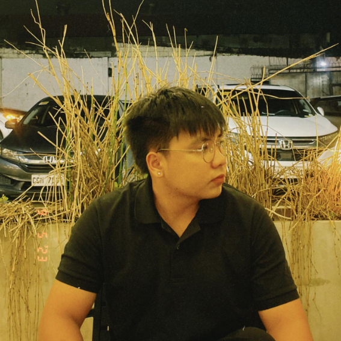
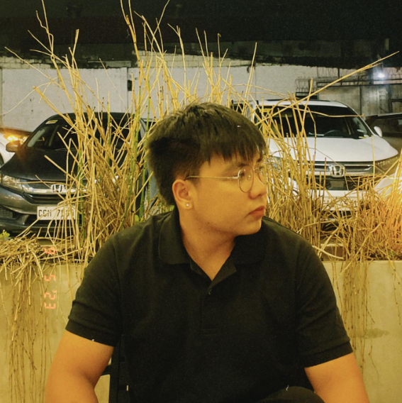
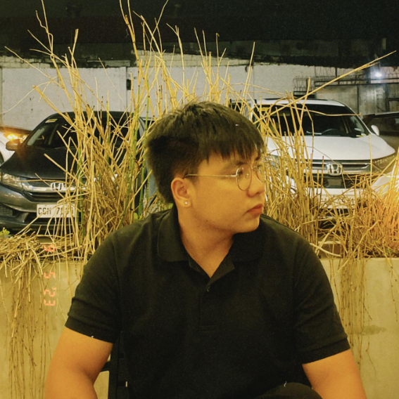
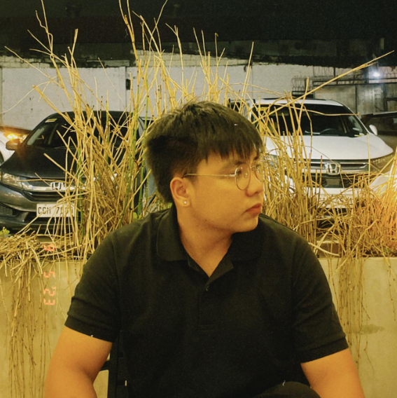

About Jose
 



Hello there reader! You can call me Jose, I am a 3rd year computer engineer student at Holy Angel University. I am currently 20 years old and I plan to finish this degree with flying colors. I am studying hard for myself and for my family. In the future, I want to be a successful webpage developer, freelancer, and a front end designer. I also want to work in a company wherein I can gain a lot of experience and hone my programming skills.
I am most interested in learning new things in life and taking care of my well-being. Self love is the best love!!
My hobbies are: driving around, going to the gym, and playing online games.
My most useful skills are: critical thinking, communication, and time management.
I contributed to our ongoing project "Adventure Minalin" by setting up the code foundation for the search function, which you can find on the discover page. I also contributed to some parts of the places page. Additionally, I researched important information about "Minalin" that helped our whole group come up with a theme for our website. I appreciate my groupmates <3.